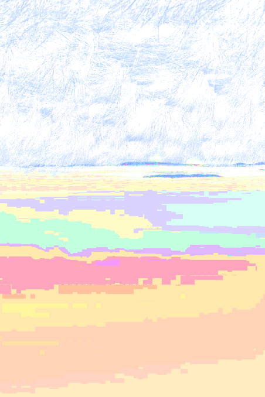

No.
You don't have a name either.
So what should I call you?
I don't know, I've never thought of a different name than the one we were given at birth.
?
Yeah
is your name, everyone calls you that.
Who you are is already decided.
You write it down on school assignments alongside the date, and you answer to it when someone calls you.
"That's your name, nothing else to it," You think, as you're walking.
It feels like it could be confusing having to use the same name for each other though.
So, do you wanna go with 1 and 2?
You wait for them to affirm your assumption.
Um.. That just sounds kinda confusing
Almost as confusing as remembering who would be the first, who came first? Was it them?
Was I stupid to think that was a good idea? Cause who am I to decide-
Sorry, sorry... I'm sorry
I've always been terrible at naming things-
Woah I- what's going on
They stop in their tracks, and turn to face you with a gesture, they want your attention
I think we can make this work.
But they're also looking down. Seems like they're not used to talking about themself. Like they shouldn't be.
You stop too.
I want to try to have a name. But I'm bad at naming too! I can only think of colors.
You have blue eyes, or are they green-
No, my name's not gonna be green-
You both can't help but laugh a little.
They're Blue then.
Just blue? I guess so.
Yeah, my name. It's something.. something's better than nothing.
They seem stuck in thought, but now I want a name!
Alright quick Blue, what color am I?
I uh, don't know... you have bright eyes. The rest of you is just kinda blending with the grass. So you look kinda-
You look down now to observe for yourself.
Grey, yeah that's simple, it works.
They stop sulking, look up, and they smile to you. Their gesture is now a gentle hand wave. Like they weren't scared at all.
Hi Grey, Hi!
Feeling recognized, you smile and wave back in response, leaning forward a little and slightly turned to the side, to face them on your left.
Hi Blue!!
And you continue walking. It's not far now.
You're both coming up to a steep hill leading to the shoreline now.

You see that pale water rushes onto the shore, its waves look almost invisible on the equally pale sand.
But the sounds of the rushing water lets you sense how far inshore it's being pushed at a time, before sinking back out. There's a relaxing feeling here.
So the two of you descend downhill. Blue walks further in front.
The texture of grass and sand below your feet mix together until you're now standing on the beachside.
You're both looking straight ahead to the expanse of ocean. It meets a white fog at the horizon, with clouds. The water rushes up, meeting your feet, they feel numb where it touches, but only for a bit as the wave returns.
You sigh.
Blue, What is this place?
They hear you and turn a little. You see they're looking at the sand.
I like to call it the grove. Well this area is more like a beach. I'm not sure, but we're here.
It's nice. Do you live here?
Blue looks up at you.
Um. Well, I don't know where else I'd live.
I guess so..
They shrug again and just kinda stand there.
You feel like maybe you were trespassing before, but now it's fine. You have a friend! You walk up to Blue, and sit down next to them in a cross-legged position. Your arms are bent to support your head, it rests on them. And you look down.
Sorry if I just showed up uninvited, I don't know how I got here..
They shuffle their feet in the sand a bit while standing in place, thinking, before lowering themself down to sit alongside you.
No you're fine. I don't know how I got here either...
Blue sighs.
You're both watching the waves now as they brush up closer onto the shore. It's calming, but the conversation's in a different place.
...Is that worrying?
It's probably fine.
Okay.
What do you think...
Is your earliest memory?
Probably this week.
Could hear what sounded like loud yelling outside my room. I don't know why it was happening.
Oh, that sounds pretty scary.
I don't know what to think of it. Didn't try to investigate.
It just happens a lot.
You admittedly only recall few things up until now, like there's gaps... They're vivid, and emotional.
Well-
you flinch-
Woah- hey- it's okay.. please don't be scared!
You were deep in thought, and couldn't tell it was Blue for a second. And couldn't notice until now, but you're sitting curled up, with your arms crossed on your knees.
They place a hand on your shoulder, you're tense, you're shaking again, and they can feel it.
A wave rushes up once more, surrounding your sand-planted body as you look straight out to the sea.
Were you thinking about something?
Yeah.. sorry
Nono, You're okay... What were you thinking about?
...I don't know. Just memories.
They seem to turn their head away for a second, 'hmm'ing softly.
You see the eye facing your direction of their face squint slightly.
They turn back to you and their other eye is closed.
Then they lift their head and look at you with their eyes now open.
Maybe they're trying to figure something out.
Well-
What happened to your eye?
They stare blankly at you, confused? Was that sudden?
What about my eye?
Your right eye. It looks hurt, did something happen to it?
They look shocked and even more confused now
I wouldn't know, did I hurt myself?
Um.. I'd hope not?
Huh...
You try to stand up to your feet, looking at the water now, and reach out a hand to Blue to help them up to their feet too. You have an idea..
Maybe you can clean it in the water here.